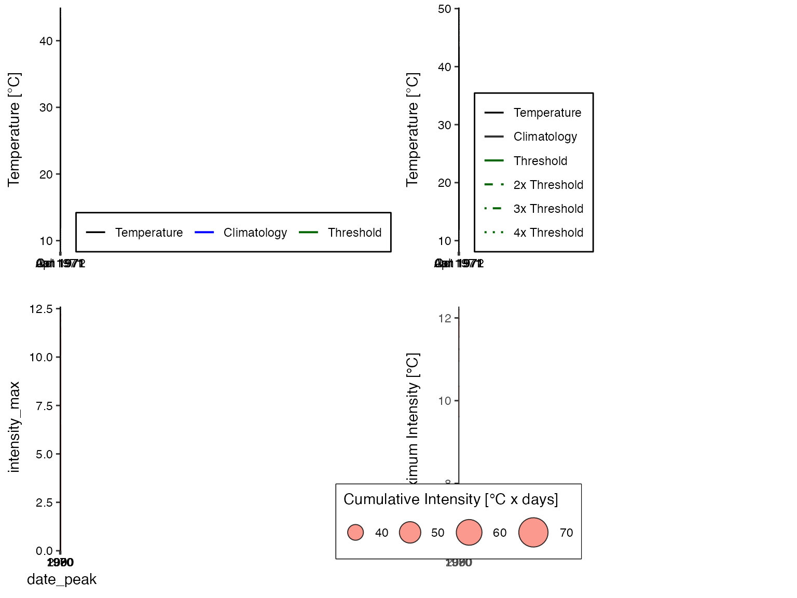

Alternative Thresholds
Robert W Schlegel
2020-02-13
Source:vignettes/complex_clims.Rmd
complex_clims.RmdOverview
The heatwaveR package was designed to include many different methods for the creation of climatologies and thresholds for detecting extremes events (e.g. heatwaves and cold-spells) in time series data. To this end we made a very large change in the event detection pipeline when we moved from the RmarineHeatWaves package to heatwaveR. This change may primarily be seen with the inclusion of the ts2clm() function and the removal of the climatology performed in RmarineHeatWaves::detect() in favour of detect_event(), which does not calculate climatologies. In this way we have allowed for the introduction of a multitude of more complex climatology calculation and event detection/filtering methods. It is our overarching goal to provide one package that allows climate scientists to calculate these events in both the atmosphere and oceans. But rather than talking about it, let’s walk through some case studies on how this package can be used for diverse applications.
Double thresholds
Brought to our attention by Mr. Haouari from the Hydrometeorological Institute of Training and Research (IHFR) in Algeria was the concept of using a flat (e.g. 19\(^\circ\)C) tMin bottom boundary when calculating events from tMax with the standard 90th percentile upper threshold. As the authors of the heatwaveR package are admittedly marine oriented, we tend to work with daily time series that have only one mean value per day (e.g. tMean, temp, sst). This is why there are not arguments in the heatwaveR suite of functions that call on tMin and tMax explicitly, but that does not mean that one cannot do so. Below we will work through the steps one would take to calculate (atmospheric) heatwaves, as per their definition in Perkins and Alexander (2013) (but excluding the calculation of EHF), and with the additional step proposed by Mr. Haouari.
The following sub-sections will show the step-by-step process one may use to calculate atmospheric heatwaves using a 90th percentile threshold created from the tMax time series for a location, but will only use the days when the corresponding tMin also exceeds a pre-determined flat bottom boundary on the same days to quantify the heatwave metrics. We will finish by visualising the results with the built-in heatwaveR graphing functions of event_line() and lolli_plot as well as a bubble plot. The data we will use for these examples will be a 45 year time series of daily atmospheric tMin and tMax temperatures over Algiers, Algeria contributed by Mr. Haouari.
Data prep
The first step with any analysis in R should be the loading of the packages to be used.
With our libraries loaded, we will now go about explicitly calling the Algiers data into our environment. These data are automatically loaded for us when we load the heatwaveR library, but we perform this step here just for clarity. Anyone following along should feel free to use whatever data they would like. As long as the data have a date (t), tMin, and tMax column this code will function as designed.
Calculating thresholds
With our libraries and data loaded, we will now calculate the two thresholds we need to correctly detect the heatwaves and accurately quantify their metrics. The first is the 90th percentile threshold based on the tMax time series. The second is the flat exceedance of 19\(^\circ\)C based on the tMin data. We use 19\(^\circ\)C as the bottom threshold as this is roughly the mean tMin for summer temperatures.
# The tMax threshold
# The current WMO standard climatology period is 1981-01-01 to 2010-12-31 and should be used when possible
# We rather use 1961-01-01 to 1990-01-01 as this is the oldest 30 year period available in the data
tMax_clim <- ts2clm(data = Algiers, y = tMax, climatologyPeriod = c("1961-01-01", "1990-12-31"), pctile = 90)
# The tMin exceedance
# Note the use here of 'minDuration = 3' and 'maxGap = 1' as the default atmospheric arguments
# The default marine arguments are 'minDuration = 5' and 'maxGap = 2'
tMin_exc <- exceedance(data = Algiers, y = tMin, threshold = 19, minDuration = 3, maxGap = 1)$thresholdCalculating events
Now that the two thresholds have been calculated we use the detect_event() function as usual, but provide the second threshold to the argument threshClim2 that would normally lay dormant.
# Note that because we calculated our 90th percentile threshold on a column named 'tMax'
# and not the default column name 'temp', we must specify this below with 'y = tMax'
events <- detect_event(data = tMax_clim, y = tMax, # The 90th percentile threshold
threshClim2 = tMin_exc$exceedance) # The flat exceedance thresholdPlease note that even though the use of the second threshold does allow for the resultant event metrics to differ, the values themselves are still being calculated against the seasonal climatology and daily temperatures for the time series given to the 90th percentile threshold calculation (in this case tMax) and so using a second threshold (in this case tMin) won’t generally have much of an effect on the event metrics. Rather it mostly screens out smaller or larger events depending on how one chooses to set the threshold. In the case when an exceedance threshold is chosen for a temperature that would typically only occur in summer (e.g. 19\(^\circ\)C, as used here), one is also effectively screening events by season. There are many use cases where this would be desirable. For example, if one is only interested in events that would occur during a season in which night time heat stress becomes an issue for the young and elderly.
Creating visuals
Even though we have used two thresholds to calculate our events, the results are output the same as though only one threshold (default) were used. This means that we may use the visualisation functions that come with heatwaveR without any extra fuss.
# The code to create a bubble plot for the heatwave results
bubble_plot <- ggplot(data = events$event, aes(x = date_peak, y = intensity_max)) +
geom_point(aes(size = intensity_cumulative), shape = 21, fill = "salmon", alpha = 0.8) +
labs(x = NULL, y = "Maximum Intensity [°C] ", size = "Cumulative Intensity [°C x days]") +
scale_size_continuous(range = c(1, 10),
guide = guide_legend(title.position = "top", direction = "horizontal")) +
theme_bw() +
theme(legend.position = c(0.3, 0.12),
legend.box.background = element_rect(colour = "black"))
# Don't forget to set 'event_line(y = tMax)'
ggarrange(event_line(events, y = tMax, metric = "intensity_max"),
event_line(events, y = tMax, metric = "intensity_max", category = T),
lolli_plot(events),
bubble_plot,
ncol = 2, nrow = 2, align = "hv")
Alternative second thresholds
Using a percentile based second threshold is not much different than using a static second threshold. Rather than using exceedance() to get our second threshold we can use ts2clm nested within detect_event(). It must also be pointed out that in addition to using multiple thresholds, we can adjust the minimum duration (minDuration) and maximum gap (maxGap) arguments for our multiple thresholds, too. This allows us to provide different ‘flavours’ of criteria for our events. For example, let’s say we are interested in night-time events (tMin) when the temperatures remain above the 80th percentile threshold (pctile = 80) for 10 or more days (minDuration = 10) without dipping below that threshold for more than 2 consecutive days (maxGap = 2). But on top of that, we are also only interested in those parts of the event when the daytime temperatures exceed the 90th percentile threshold (pctile = 90) for 3 or more days (minDuration = 3) non-stop (maxGap = 0).
Below we will look at how to detect/calculate events that meet these rather specific criteria. We will also calculate events with just the first threshold and compare the results visually. It must be noted here that whichever criteria is the most strict, in this case minDuration = 3 and maxGap = 0, will be the predominant filter through which the event metrics are quantified.
# Note that because we are not using the standard column name 'temp' we must
# specify the chosen column name twice, once for ts2clm() and again for detect_event()
# First threshold based on tMin
thresh_tMin <- ts2clm(data = Algiers, y = tMin, pctile = 80,
climatologyPeriod = c("1961-01-01", "1990-12-31"))
# Second threshold based on tMax
# Be careful here that you put the arguments within the correct brackets
thresh_tMax <- detect_event(ts2clm(data = Algiers, y = tMax, pctile = 90,
climatologyPeriod = c("1961-01-01", "1990-12-31")),
# These arguments are passed to detect_event(), not ts2clm()
minDuration = 3, maxGap = 0, y = tMax, protoEvents = T)
# Detect/calculate events using the two precalculated thresholds
# Because detect_event() is not able to deduce which arguments we used above,
# we must again tell it explicitly here
events_two_thresh <- detect_event(data = thresh_tMin, y = tMin, minDuration = 10, maxGap = 2,
threshClim2 = thresh_tMax$event, minDuration2 = 3, maxGap2 = 0)
# Or to simply use one threshold
events_one_thresh <- detect_event(data = thresh_tMin, y = tMin, minDuration = 10, maxGap = 2)Here are the differences in lolliplot format:
ggarrange(lolli_plot(events_one_thresh), lolli_plot(events_two_thresh), labels = c("One threshold", "Two thresholds"))
Here is a brief display of the top few events from each method:
## event_no index_start index_peak index_end duration date_start date_peak
## 1: 1 6135 6137 6144 10 1977-10-18 1977-10-20
## 2: 2 10844 10845 10856 13 1990-09-09 1990-09-10
## 3: 3 11191 11200 11201 11 1991-08-22 1991-08-31
## 4: 4 13292 13300 13301 10 1997-05-23 1997-05-31
## 5: 5 15534 15542 15546 13 2003-07-13 2003-07-21
## date_end intensity_mean intensity_max intensity_var intensity_cumulative
## 1: 1977-10-27 6.3138 9.4382 2.2112 63.1381
## 2: 1990-09-21 4.8424 7.1201 1.1790 62.9507
## 3: 1991-09-01 4.2121 6.9957 1.3819 46.3328
## 4: 1997-06-01 5.1003 6.9670 1.4467 51.0026
## 5: 2003-07-25 4.9539 7.8255 1.5317 64.4012
## intensity_mean_relThresh intensity_max_relThresh intensity_var_relThresh
## 1: 3.7265 6.8697 2.2268
## 2: 2.1077 4.3639 1.1767
## 3: 1.5352 4.2877 1.3602
## 4: 2.3915 4.3123 1.4514
## 5: 2.4188 5.3032 1.5337
## intensity_cumulative_relThresh intensity_mean_abs intensity_max_abs
## 1: 37.2652 19.1700 22.6
## 2: 27.4000 21.9538 24.6
## 3: 16.8871 22.6091 25.1
## 4: 23.9148 18.4400 20.7
## 5: 31.4441 23.6154 26.6
## intensity_var_abs intensity_cumulative_abs rate_onset rate_decline
## 1: 2.4454 191.7 2.7282 0.8901
## 2: 1.2474 285.4 2.9576 0.3342
## 3: 1.2169 248.7 0.5665 2.5287
## 4: 1.5284 184.4 0.6922 3.4156
## 5: 1.5737 307.0 0.6559 1.2658## event_no index_start index_peak index_end duration date_start date_peak
## 1: 1 6135 6137 6137 3 1977-10-18 1977-10-20
## 2: 2 10851 10851 10856 6 1990-09-16 1990-09-16
## 3: 3 11191 11200 11201 11 1991-08-22 1991-08-31
## 4: 4 13292 13294 13294 3 1997-05-23 1997-05-25
## 5: 5 15540 15542 15545 6 2003-07-19 2003-07-21
## date_end intensity_mean intensity_max intensity_var intensity_cumulative
## 1: 1977-10-20 7.8121 9.4382 1.6787 23.4362
## 2: 1990-09-21 4.6254 6.2445 1.1706 27.7521
## 3: 1991-09-01 4.2121 6.9957 1.3819 46.3328
## 4: 1997-05-25 4.5271 5.5434 1.0897 13.5814
## 5: 2003-07-24 5.5217 7.8255 1.6801 33.1301
## intensity_mean_relThresh intensity_max_relThresh intensity_var_relThresh
## 1: 5.2521 6.8697 1.6710
## 2: 1.9070 3.5148 1.1701
## 3: 1.5352 4.2877 1.3602
## 4: 1.7688 2.7948 1.0998
## 5: 3.0012 5.3032 1.6827
## intensity_cumulative_relThresh intensity_mean_abs intensity_max_abs
## 1: 15.7562 21.1000 22.6
## 2: 11.4419 21.4667 23.3
## 3: 16.8871 22.6091 25.1
## 4: 5.3064 17.4667 18.6
## 5: 18.0071 24.3167 26.6
## intensity_var_abs intensity_cumulative_abs rate_onset rate_decline
## 1: 1.5524 63.3 2.7282 1.9769
## 2: 1.1776 128.8 0.9760 0.5396
## 3: 1.2169 248.7 0.5665 2.5287
## 4: 1.2055 52.4 1.7839 0.1172
## 5: 1.7034 145.9 0.7293 1.0585If we look at these results we see that the use of two thresholds did not detected fewer events than the use of one threshold. This is because even though the second threshold was much more ‘difficult’ for the time series to surpass than the first, the heatwaves in the time series are so pronounced that they emerge regardless. This method allows for a lot of flexibility, but users should also be cautious that they understand what exactly they are asking their machines to do. In the case above, it may be that we would actually prefer to calculate our event metrics based entirely on the first threshold, but filter out the events that didn’t meet our second threshold criteria. We will see how to do this in the following section.
Filtering with a second threshold
The methodology outlined below for the detection and filtering of events with two thresholds is somewhat cumbersome. A potential issue with this technique is that the multiple filters do not affect the calculation of the event metrics (e.g. intensity_cumulative), as only the primary threshold given to detect_event() is used when calculating event metrics. This may however be the desired case if one is still interested in knowing the cumulative intensity above the given percentile threshold, but only wants to filter the full event based on some other threshold criteria. I can imagine real-world use cases for both scenarios, which is why this seemingly less sophisticated approach is detailed below.
Filtering events
Because we have already calculated our single threshold events (events_one_thresh) and our second threshold (thresh_tMax) we may directly begin filtering the results. Before we do so, let’s pull out the list components of our results into dataframes for easier use down the line.
# Pull out each data.frame as their own object for easier use
events_one_event <- events_one_thresh$event
events_one_climatology <- events_one_thresh$climatologyThis is where things may get tricky for some users, and where the default use of the functions in the heatwaveR package ends. We are now going ‘off-road’ so to speak. But do not despair! The tidyverse suite of packages makes data wrangling like this much more user friendly than it was in the dark days of Base R coding.
In order to make the filtering of events easier, we will combine the two different dataframes that we are using as threshold/filtering guides to chose the events that meet all of our selection criteria.
# Join the two threshold dataframes
two_thresh <- left_join(events_one_climatology, thresh_tMax, by = c("t"))
# Remove all days that did not qualify as events in both thresholds
two_thresh_filtered <- two_thresh %>%
filter(event.x == TRUE,
event.y == TRUE)With our filtering guide created, we may now apply it to events_one_thresh to get our filtered results.
# Copy data with a new name
events_one_thresh_filtered <- events_one_thresh
# Then filter
events_one_thresh_filtered$event <- events_one_thresh_filtered$event %>%
filter(event_no %in% two_thresh_filtered$event_no.x)
# Compare results
head(events_one_thresh_filtered$event)## event_no index_start index_peak index_end duration date_start date_peak
## 1 1 6135 6137 6144 10 1977-10-18 1977-10-20
## 2 2 10844 10845 10856 13 1990-09-09 1990-09-10
## 3 3 11191 11200 11201 11 1991-08-22 1991-08-31
## 4 4 13292 13300 13301 10 1997-05-23 1997-05-31
## 5 5 15534 15542 15546 13 2003-07-13 2003-07-21
## date_end intensity_mean intensity_max intensity_var intensity_cumulative
## 1 1977-10-27 6.3138 9.4382 2.2112 63.1381
## 2 1990-09-21 4.8424 7.1201 1.1790 62.9507
## 3 1991-09-01 4.2121 6.9957 1.3819 46.3328
## 4 1997-06-01 5.1003 6.9670 1.4467 51.0026
## 5 2003-07-25 4.9539 7.8255 1.5317 64.4012
## intensity_mean_relThresh intensity_max_relThresh intensity_var_relThresh
## 1 3.7265 6.8697 2.2268
## 2 2.1077 4.3639 1.1767
## 3 1.5352 4.2877 1.3602
## 4 2.3915 4.3123 1.4514
## 5 2.4188 5.3032 1.5337
## intensity_cumulative_relThresh intensity_mean_abs intensity_max_abs
## 1 37.2652 19.1700 22.6
## 2 27.4000 21.9538 24.6
## 3 16.8871 22.6091 25.1
## 4 23.9148 18.4400 20.7
## 5 31.4441 23.6154 26.6
## intensity_var_abs intensity_cumulative_abs rate_onset rate_decline
## 1 2.4454 191.7 2.7282 0.8901
## 2 1.2474 285.4 2.9576 0.3342
## 3 1.2169 248.7 0.5665 2.5287
## 4 1.5284 184.4 0.6922 3.4156
## 5 1.5737 307.0 0.6559 1.2658## event_no index_start index_peak index_end duration date_start date_peak
## 1: 1 6135 6137 6137 3 1977-10-18 1977-10-20
## 2: 2 10851 10851 10856 6 1990-09-16 1990-09-16
## 3: 3 11191 11200 11201 11 1991-08-22 1991-08-31
## 4: 4 13292 13294 13294 3 1997-05-23 1997-05-25
## 5: 5 15540 15542 15545 6 2003-07-19 2003-07-21
## date_end intensity_mean intensity_max intensity_var intensity_cumulative
## 1: 1977-10-20 7.8121 9.4382 1.6787 23.4362
## 2: 1990-09-21 4.6254 6.2445 1.1706 27.7521
## 3: 1991-09-01 4.2121 6.9957 1.3819 46.3328
## 4: 1997-05-25 4.5271 5.5434 1.0897 13.5814
## 5: 2003-07-24 5.5217 7.8255 1.6801 33.1301
## intensity_mean_relThresh intensity_max_relThresh intensity_var_relThresh
## 1: 5.2521 6.8697 1.6710
## 2: 1.9070 3.5148 1.1701
## 3: 1.5352 4.2877 1.3602
## 4: 1.7688 2.7948 1.0998
## 5: 3.0012 5.3032 1.6827
## intensity_cumulative_relThresh intensity_mean_abs intensity_max_abs
## 1: 15.7562 21.1000 22.6
## 2: 11.4419 21.4667 23.3
## 3: 16.8871 22.6091 25.1
## 4: 5.3064 17.4667 18.6
## 5: 18.0071 24.3167 26.6
## intensity_var_abs intensity_cumulative_abs rate_onset rate_decline
## 1: 1.5524 63.3 2.7282 1.9769
## 2: 1.1776 128.8 0.9760 0.5396
## 3: 1.2169 248.7 0.5665 2.5287
## 4: 1.2055 52.4 1.7839 0.1172
## 5: 1.7034 145.9 0.7293 1.0585The event numbers found in events_one_thresh_filtered are the same as the event numbers found in events_two_thresh with the important difference that the event metrics in events_two_thresh were calculated only on the days that exceeded both thresholds, while the events in events_one_thresh_filtered have had their metrics calculated from all of the days that exceeded only the first threshold.
Visualising filtered events
To better understand how different the results from these two different techniques may be we will use lolliplots to visualise them.
ggarrange(lolli_plot(events_two_thresh, metric = "duration"),
lolli_plot(events_one_thresh_filtered, metric = "duration"),
labels = c("Double threshold", "Filter threshold"))
Difference in duration (days) of events given different applications of thresholds. Note the difference in the y-axes.
ggarrange(lolli_plot(events_two_thresh, metric = "intensity_cumulative"),
lolli_plot(events_one_thresh_filtered, metric = "intensity_cumulative"),
labels = c("Double threshold", "Filter threshold"))
Difference in cumulative intensity (°C x days) of events given different applications of thresholds. Note the difference in the y-axes.
One may of course visualise the outputs from the events calculated here with geom_flame() and geom_lolli() as well, but this will not differ from the default method of using these functions as outlined in their help files so we will not go into that here.
Summary
This vignette serves as a guideline for how to implement multiple methodologies for using two thresholds (tMin and tMax) with atmospheric data. We also showed in this vignette a more straight forward approach to using a second threshold through the built-in arguments in detect_event(). The use of a second threshold in this way, whether it be based on a static threshold or one derived from a percentile, is useful for the consideration of events that may be more specifically relevant to a given season or organism.
I hope the techniques shown in this vignette will be useful both technically and theoretically. The authors of heatwaveR are very happy to receive any further input on the development of the package as well as other potential methods for calculating heatwaves and cold-spells in air or sea.
References
Perkins, Sarah E., and Lisa V. Alexander. 2013. “On the measurement of heat waves.” Journal of Climate 26 (13): 4500–4517. https://doi.org/10.1175/JCLI-D-12-00383.1.